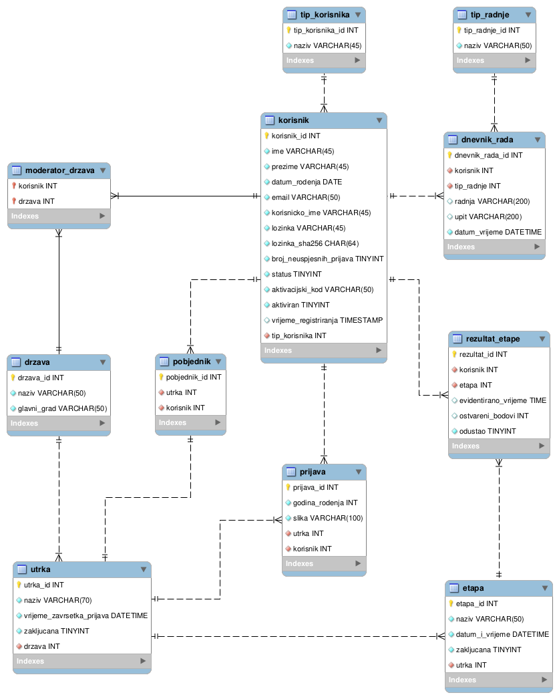
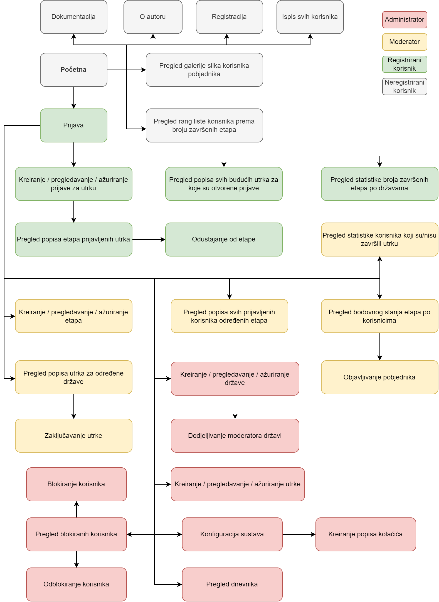

Za potrebe projekta Web dizajn i programiranje trebalo je izraditi web stranicu.
Tema projektnog zadatka je "Trčanje". Cjelokupni smisao ovog projekta je da stranica korisnicima omogući prijavu na utrke te da mogu pratiti rezultate.
Postoje 4 vrste korisnika: neregistrirani, registrirani, moderator i administrator. Na stranicu se je moguće prijaviti i odjaviti s kreiranim računom.
Različite uloge sadržavaju različite opcije kojima se može pristupiti i upravljati. Administrator kreira države i dodjeljuje im moderatora te kreira utrke
trčanja. Moderator kreira etape te vidi svoje etape i može zaključati utrke. Također, vidi bodovno stanje natjecatelja te proglašava pobjednika. Isto tako,
vidi popis prijavljenih korisnika te evidentira vremena korisnika i zaključava etape. Registrirani korisnik kreira prijavu za utrku te vidi popis budućih utrka i vidi
popis prijavljenih etapa sa svojim rezultatom. Neregistrirani korisnici imaju nekoliko opcija, a to su: pregled korisnika prema broju završenih etapa te pregled galerije pobjednika utrke.
Opis projektnog rješenja
Prvim dolaskom na početnu stranicu, korisnik se smatra kao neregistrirani korisnik te ima opcije prijave i registracije.
Isto tako ima opcije pregleda popisa korisnika prema broju završenih etapa u određenom vremenskom razdoblju (rang lista) te može vidjeti galeriju slika korisnika pobjednika
uz mogućnost sortiranja po prezimenu ili imenu te mogućnost filtriranja po državi u kojoj se odvijala utrka. Korisnik se u svakom trenutku može odjaviti sa stranice ukoliko je bio prijavljen.
Registrirani korisnik ima mogućnost kreiranja prijava za utrke. Također, može vidjeti popis svih budućih utrka za koje su otvorene prijave te vidi popis etapa za utrke na koje se
prijavio s rezultatom. Ima mogućnost odustajanja od pojedine etape određene utrke. Moderator kreira etape za utrke u državama za koje je zadužen. Vidi popis svih utrka u državama
za koje je zadužen i može zaključati utrku ako su sve etape te utrke zaključane. Vidi bodovno stanje po etapama i može proglasiti pobjednika. Također, evidentira vremena korisnika i zaključava
etapu ako svi korisnici imaju evidentiran rezultat. Administrator ima najveće ovlasti, što znači da kreira države i dodjeljuje im moderatora te kreira utrke trčanja.
ERA model

Navigacijski dijagram

Popis i opis skripata, mapa mjesta
mapa css
dmatijevi.css - skripta stilskog jezika koja služi za dizajn web stranice
mapa javascript
dmatijevi.js - skripta javascript jezika u kojoj su rađene validacije na klijentu
mapa izvorne_datoteke - sadrži sve izvorne datoteke vezane za projekt (.sql, .mwb i .xml datoteke)
mapa materijali - sadrži sve datoteke slikovnog formata (.jpg i .png datoteke)
mapa privatno
.htaccess - datoteka u kojoj se nalazi korisnik s korisničkim imenom i lozinkom kao i pristup do baze podataka
.htpasswd - datoteka u kojoj se nalazi generirana lozinka
lista_korisnika.php - php skripta na kojoj se nalazi popis svih korisnika u bazi
mapa obrasci
prijava.php - stranica na kojoj se korisnik prijavljuje
registracija.php - stranica na kojoj se korisnik registrira
baza.class.php - skripta koja služi za povezivanje na bazu i izvođenje upita
sesija.class.php - skripta koja služi za kreiranje sesije u koju se sprema korisničko ime korisnika te njegova uloga
aktivacija.php - stranica na kojoj korisnik nakon što se registrirao ima mogućnost aktivacije korisničkog računa
galerija.php - stranica na kojoj korisnik može vidjeti galeriju pobjednika utrka, ima mogućnost sortiranja i filtriranja
izbornik.php - skripta na kojoj se nalaze elementi izbornika
pregled_blokiranih_korisnika.php - stranica na kojoj administrator vidi popis blokiranih korisnika, s mogućnošću blokiranja/odblokiranja korisnika
rang_lista.php - stranica na kojoj korisnik vidi rang listu korisnika prema broju završenih etapa u vremenskom razdoblju
drzave.php - skripta na kojoj administrator kreira/ažurira/pregledava države
dodjela_moderatora.php - skripta koja služi kako bi se određenoj državi dodijelio moderator
etape.php - skripta na kojoj moderator kreira/ažurira/pregledava etape
evidentiranje_vremena.php - skripta na kojoj moderator evidentira vremena korisnika i zaključava etapu
popis_buducih_utrka.php - skripta na kojoj se može vidjeti popis svih budućih utrka za koje su otvorene prijave
popis_etapa_prijavljenih_utrka.php - skripta na kojoj se može vidjeti popis korisnikovih prijavljenih utrka s rezultatom te mogućnošću odustanka od etape
popis_prijavljenih_korisnika.php - skripta na kojoj moderator vidi popis svih prijavljenih korisnika za one etape za koje je zadužen s informacijom je li korisnik završio ili je odustao od etape
popis_utrka_i_zakljucavanje.php - skripta na kojoj moderator vidi svoje utrke, bodovno stanje korisnika, može zaključati utrke i proglasiti pobjednika.
prijava_utrke.php - skripta na kojoj registrirani korisnik kreira/ažurira/pregledava prijavu za utrku
utrke.php - skripta na kojoj administrator kreira/ažurira/pregledava utrke trčanja
zaglavlje.php - skripta na kojoj se uključuje klasa baze i klasa sesije, koristi se u svim stranicama
o_autoru.html - stranica na kojoj se nalaze informacije o autoru
dokumentacija.html - stranica dokumentacije
index.php - početna stranica
Popis i opis korištenih tehnologija i alata
Javascript - validacija na strani klijenta
PHP - rad s bazom i provjera zahtjeva GET i POST metodama
NetBeans IDE - alat u kojem je izrađen projekt
Filezilla - alat za prijenos datoteka na server
MySQL Workbench - alat u kojem je modelirana baza podataka (ERA model)
draw.io - online alat u kojem je izrađen navigacijski dijagram
phpMyAdmin - unos podataka u tablice i izrađivanje SQL upita
Terminal - web server pomoću kojeg je testirano programsko rješnje
Popis i opis vanjskih biblioteka
Google reCAPTCHA - zaštita od automata
zaglavlje.php, izbornik.php, baza.class.php, sesija.class.php - materijali s vježbi
aktivacija.php, prijava.php, registracija.php, dmatijevi.js - preuzeto s prošlog projekta "Pivnica"